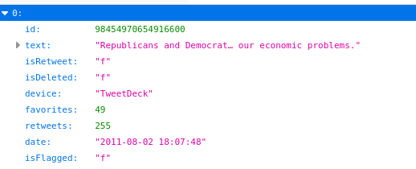

HW5: Tweet Wrangling (32 Points)
Overview / Logistics
The purpose of this assignment is to get you practice with Python dictionaries with a very relevant example. You will be loading in and examining the file tweets_01-08-2021.json from the Trump Twitter Archive, which holds a list of Donald Trump's tweets since 2016 in dictionary form. You can load the file with this code
You can also open up this file in the browser and look through it:
What to submit
When you are finished, you should submit a file Twitter.py to Canvas with the methods for each task, as well as a description of the question you asked for part 4 and the answer you discovered
The Problem
In class, we showed how to process Python dictionaries, and that the Twitter API organizes tweets in dictionary form. In this assignment, you will be digging into Donald Trump's tweets from November 2016 to answer a few questions
Part 1: The kth Most Popular Tweet (6 Pts)
In the video from last week, we showed how to find Trump's most popular tweet by using numpy's argmin function (Click here to review that example). Numpy also has a function called argsort. Look at the documentation for this function, and use it to come up with Trump's kth most popular tweet, as measured by the number of retweets. Put your code in a method called find_kth_popular_tweet(tweets, k). This method should find and print out the dictionary for this tweet. For example, the code
should output
Tips
- You should play around with the
argsortfunction using simple examples that you design by hand, before you apply it to the more complicated scenario with tweets. By default, this method sorts things in ascending order. Somehow, you will need to get them in descending order - Be careful with zero-indexing. The 5th most popular tweet would really be at index 4 in a sorted list
Note for the curious
Since we only need the kth largest tweet, technically sorting everything is overkill. For those familiar, sortingN items can be accomplished in O(N log N) steps optimally. However, an operation known as a k-partition can be used to separate out the smallest k elements of a list in only O(N) time. One can use numpy's argpartition method to separate out the maximum k in this fashion. Though getting comfortable with argsort will help you in the next task
Part 2: Top k Most Used Words (10 Pts)
Your next task is to loop through all of the tweets and to print out the top k most commonly used words. Create a method get_k_most_popular_words(tweets, k) to do this. For instance,
should print out the following words in order
|
1 : the 2 : to 3 : and 4 : a 5 : of 6 : is 7 : in 8 : for 9 : i 10 : rt 11 : on 12 : you 13 : @realdonaldtrump 14 : will 15 : be 16 : are 17 : that 18 : great 19 : with 20 : we |
21 : our 22 : have 23 : it 24 : at 25 : this 26 : he 27 : they 28 : trump 29 : was 30 : my 31 : &, 32 : has 33 : not 34 : by 35 : all 36 : thank 37 : president 38 : just 39 : - 40 : your |
41 : as 42 : so 43 : from 44 : very 45 : who 46 : people 47 : his 48 : no 49 : but 50 : do 51 : what 52 : new 53 : would 54 : about 55 : if 56 : get 57 : an 58 : more 59 : out 60 : should |
61 : like 62 : now 63 : their 64 : big 65 : than 66 : can 67 : or 68 : never 69 : make 70 : been 71 : one 72 : up 73 : me 74 : when 75 : america 76 : many 77 : good 78 : only 79 : going 80 : how |
81 : time 82 : democrats 83 : want 84 : obama 85 : american 86 : donald 87 : there 88 : news 89 : country 90 : vote 91 : much 92 : over 93 : even 94 : why 95 : were 96 : & 97 : back 98 : must 99 : see 100 : us |
101 : fake 102 : am 103 : need 104 : being 105 : had 106 : @realdonaldtrump: 107 : u.s. 108 : love 109 : best 110 : last 111 : because 112 : think 113 : really 114 : she 115 : run 116 : doing 117 : go 118 : did 119 : after 120 : yo! |
Tips
-
Let's say, for the sake of argument, that I have the following word_counts dictionary
Then, if I say
and then I say
then now I have a list of all words and a corresponding numpy array of all of the counts. You can then argsort
countsand use that to pick out the top k words
Part 3: COVID Tweets (10 Pts)
Make a function plot_coronavirus_timeline(tweets) that loops through all of the tweets in the database and picks out all of the tweets that mention either "corona", "virus", or "covid" in the lowercase version of the 'text' key. Then, it should create a bar chart that shows a bar for each date during which these words were mentioned, with the height of the bar equal to the number of tweets with this mentioned on that particular day.
Since plotting labeled bar charts in matplotlib is not obvious, you may use the starter code below. You simply need to fill in the counts dictionary. You should use the provided get_tweet_date(tweet) to create the key for this dictionary. This function puts the dates into Year/MM/DD format, which ensures that alphabetical is the order in which they occur in time.
Tips
- To check if a string is contained in another string, simply say
Part 4: Your Own Question (6 Pts)
Figure out some other question to ask about the data that is not trivially related to any of the above questions, and answer it in code.